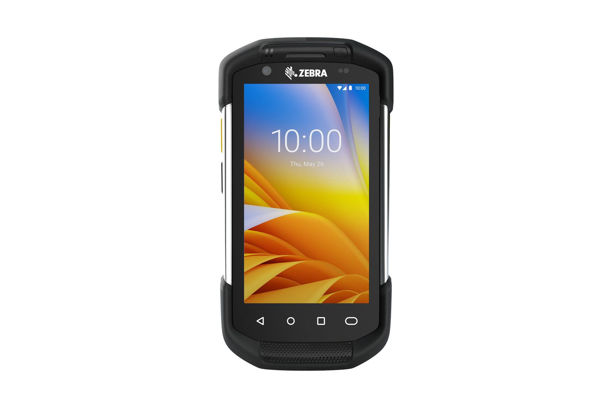
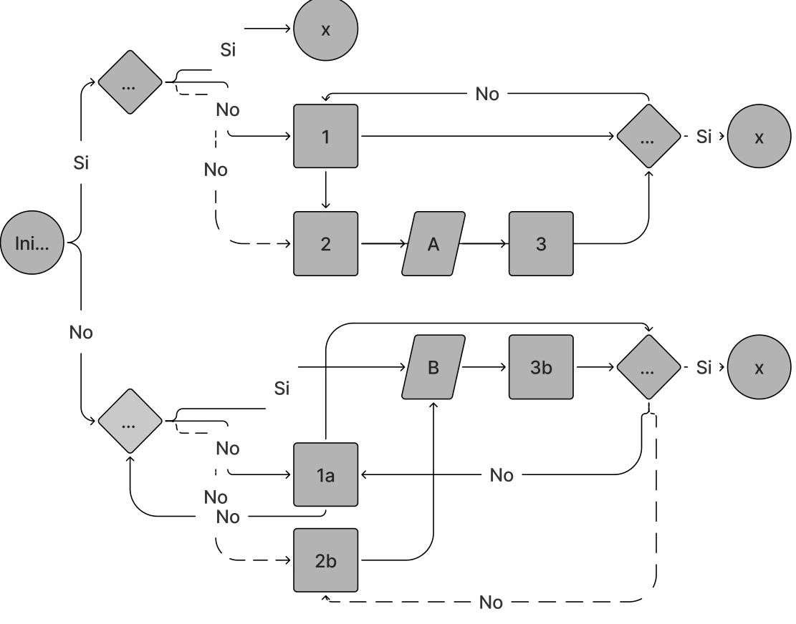
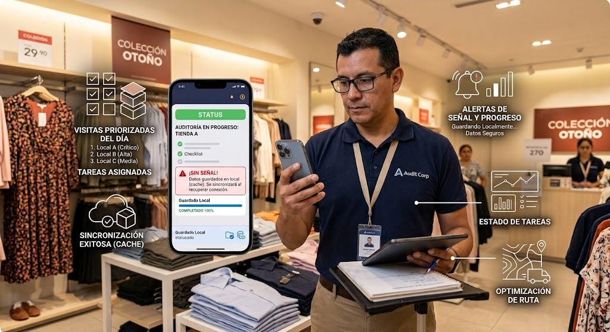
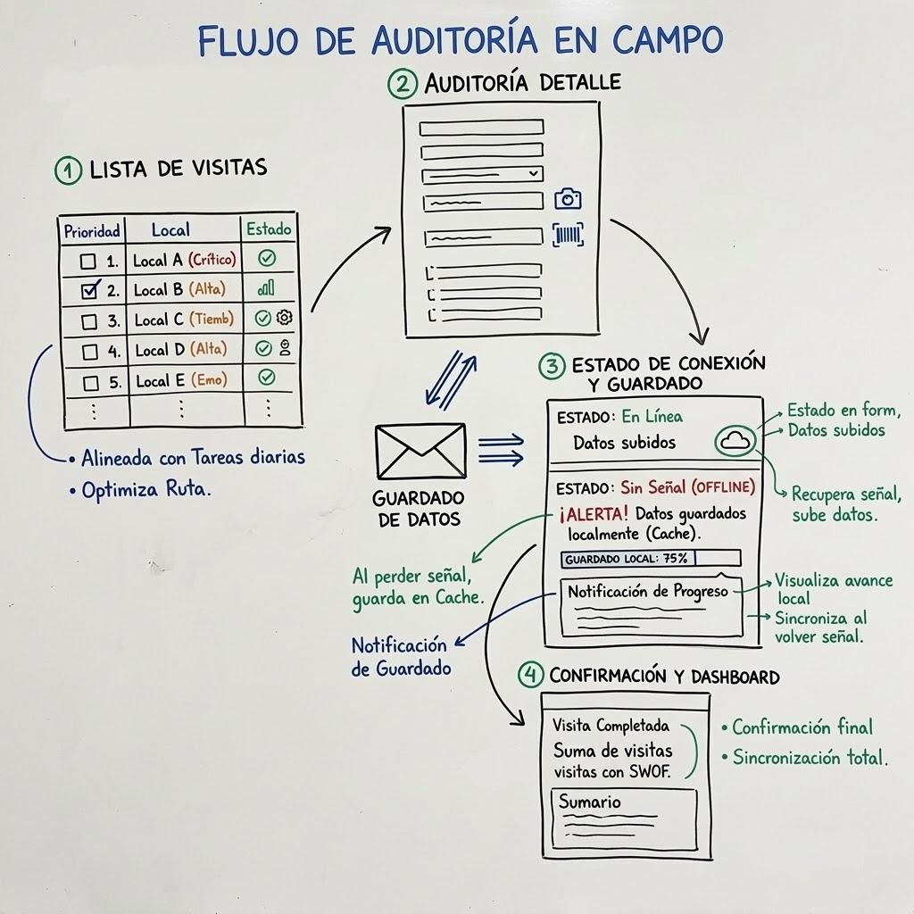
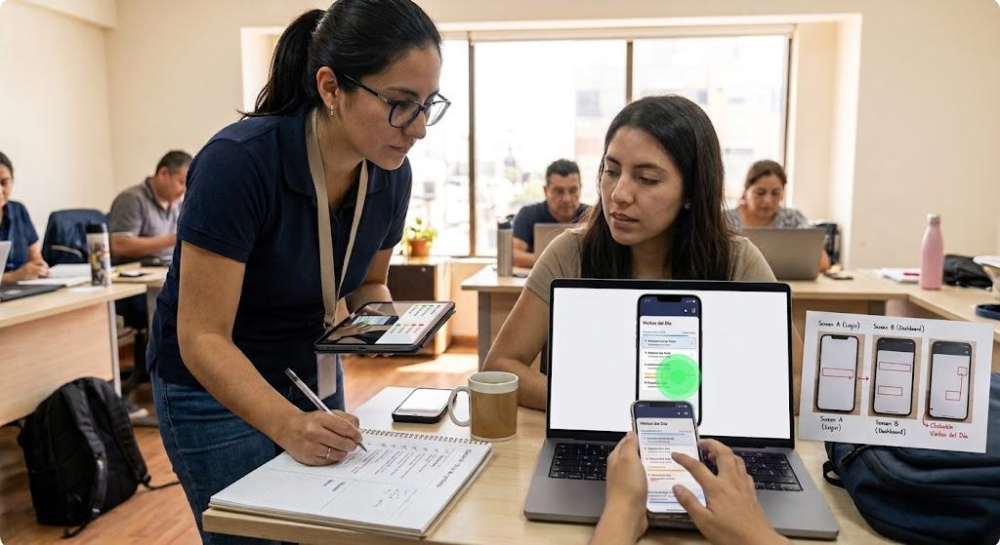
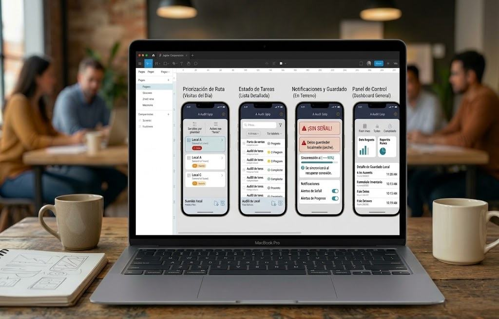

2018 / CADEMSMART
Migración de Plataforma y Rediseño UI
Cademsmart es una empresa chilena líder en tecnología y analítica aplicada al retail. Se especializa en la optimización del punto de venta mediante auditorías de campo, procesamiento de datos comerciales y el desarrollo de plataformas SaaS que transforman KPIs operativos en decisiones estratégicas para marcas de consumo masivo.

- Rol
- Diseñadora UX/UI
- Responsabilidades
- Rediseño
- Plataforma
- Android Móvil
Proceso
Cambio de sistema operativo e interfaz
En 2017, CademSmart (hoy CSmart) necesitaba migrar su operación de terreno desde máquinas industriales Zebra (que operaban con sistemas Windows obsoletos) hacia dispositivos móviles Android tradicionales. El desafío de diseño consistió en transformar una interfaz tosca, pensada para pantallas rígidas y lápiz stylus, en una experiencia móvil moderna, táctil e intuitiva basada en Material Design. El proyecto requirió reestructurar los flujos de trabajo para simplificar la captura masiva de datos en supermercados e integrar nuevas funcionalidades operativas en el nuevo formato mobile.



INVESTIGACIÓN
Auditoría y flujos
- Análisis de la plataforma heredada: Evalué el flujo de la aplicación original en las máquinas Zebra, analizando la experiencia actual y diagnosticando los problemas críticos de usabilidad que enfrentaban los operarios.
- Mapeo de flujos y "caminos": Diagramé por completo el flujo de las mediciones existentes. Este mapa de procesos permitió visualizar con claridad la arquitectura de información y facilitó la integración limpia de las nuevas funcionalidades requeridas por el negocio.


USUARIOS
Observación contextual
Para entender el contexto real de uso, realicé investigación de campo (entrevistas y observación contextual) acompañando a los auditores directamente en las salas de venta. Esto me permitió identificar necesidades críticas del día a día:
- Feedback multisensorial: Detecté la necesidad de diseñar alertas visuales, vibraciones y sonidos específicos para que el auditor supiera si los datos se ingresaron correctamente sin tener que mirar fijamente la pantalla en pasillos ruidosos o concurridos.
- Flujo operativo real: Analicé a fondo el proceso completo de visita a los locales y el posterior envío de datos (sincronización).
- Puntos de dolor y oportunidades: Identifiqué las dificultades técnicas actuales del hardware antiguo para transformarlas en oportunidades de mejora clave dentro de la nueva interfaz Android.

Proceso
ALINEAR Y DEFINIR OPORTUNIDADES DE MEJORA CLAVES
- Conecté empatía con negocio: Crucé las frustraciones reales de los auditores en terreno con las metas operativas de la empresa para resolver dolores reales con valor comercial.
- 2. Co-creé con el equipo de TI: Trabajé codo a codo con los desarrolladores para transformar la falta de señal en bodegas en un reto de diseño: una arquitectura offline que protegiera el trabajo del usuario.
- 3. Equilibré impacto y viabilidad: Filtré las prioridades para encontrar el balance perfecto: soluciones viables de construir que generaran el mayor beneficio tanto para el auditor como para el negocio.
Con los hallazgos de la investigación, lideré mesas de trabajo junto al área de TI y Stakeholders para alinear las oportunidades de diseño con la viabilidad técnica y los objetivos de negocio de la empresa.


DISEÑO E IDEACIÓN
ALINEAR Y DEFINIR OPORTUNIDADES DE MEJORA
Una vez definidas las nuevas funcionalidades y reglas de negocio, inicié la etapa de ideación utilizando bocetos en baja fidelidad (Paper Wireframes). El objetivo principal de este paso fue estructurar la arquitectura de información de forma rápida, explorando diferentes distribuciones de los elementos visuales antes de pasar al desarrollo digital.
Trabajar en papel me permitió: Iterar a bajo costo: Probar diferentes layouts para las listas de tareas, alertas táctiles y flujos de auditoría de manera ágil.
- Organizar la densidad de datos: Asegurar que los complejos KPIs heredados del sistema de las máquinas Zebra se adaptaran de forma limpia y legible al espacio reducido de una pantalla móvil Android.


Pruebas de usabilidad
Validación con usuarios
- Validé con usuarios reales: Realicé pruebas de usabilidad cualitativas con el equipo interno y los auditores en terreno para evaluar el nuevo diseño en Android frente al sistema anterior de las máquinas Zebra.
- Evalué la fluidez del flujo: Aseguré que los auditores completaran tareas críticas (rutas, inventario y reportes) de forma fluida y sin bloqueos mentales.
- Aplané la curva de aprendizaje: Garanticé que la transición tecnológica de Windows a Android fuera amigable para reducir drásticamente los tiempos de capacitación del personal.


prototipo
Iteraciones y entrega
- Ajusté con feedback real: Iteré los prototipos finales de alta fidelidad incorporando directamente los aprendizajes de los test de usabilidad guerrilla.
- Lideré el traspaso técnico (Handoff): Presenté y entregué formalmente las propuestas finales a los equipos Comercial y de TI para asegurar una implementación sin fricciones.
- Guié el desarrollo en Android: Estructuré la documentación técnica necesaria para guiar con total claridad al equipo de desarrollo dentro del ecosistema de la empresa.

